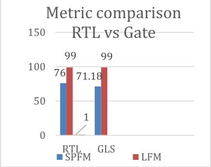
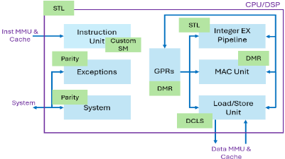
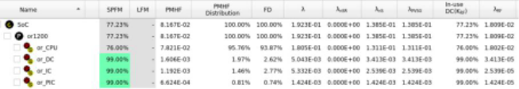
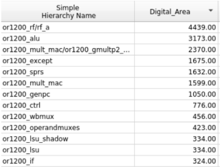
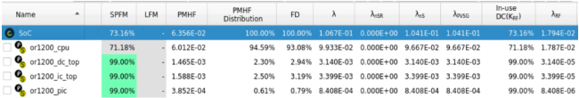
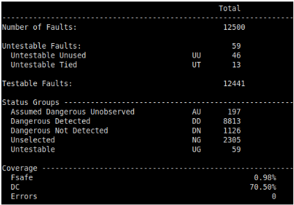
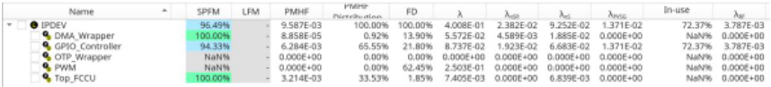

面向功能安全的 RTL 早期 FMEDA：将 RTL 指标与 GLS 关联以实现精确的架构分析
论文针对传统 FMEDA 依赖 gate-level simulation 与 post-layout 数据、安全评估滞后导致设计迭代被动的问题，提出在 RTL 阶段完成 FMEDA 的方法。核心是 lightweight quick synthesis：不改变设计即提取各模块 cell 组成、digital area 与 transistor count，按 RTL hierarchy 聚合构建层级化 FMEDA 模型，并用 VCZ01X 类故障仿真器在 RTL 层执行 fault injection，将结果分类为 Detected/Latent/Residual 并闭环更新 SPFM/LFM。RISC-V open core 案例中 RTL SPFM 76.0% 与 gate-level 71.18% 偏差约 6.34%，LFM 均为 99%，RTL 与 gate-level post-verification SPFM 相关系数 ρ≈0.93；automotive SoC 实际 IP 的 RTL SPFM 达 96.49%。论文结论是该相关性足以支撑早期 safety closure，可替代用于 preliminary safety certification 的 late-stage GLS，并减少最高 35% 的整体验证工作量。
传统 FMEDA 在设计后期基于打平的 gate-level netlist 与 post-layout 数据进行：synthesis 打平后 RTL hierarchy 映射丢失，需手工重建层级、追溯每个 netlist 节点到原始功能模块，耗时数周且易错；fault injection 揭示的诊断缺口发现太晚，硬件修改需昂贵的 re-spin，只能以软件完整性检查等手段补偿。论文要解决的核心问题是：能否在 RTL 阶段就定量评估 safety metrics 与 fault detectability，同时保持与 GLS 结果的准确性和可追溯性。
提出 RTL-centric FMEDA framework：(1) lightweight quick synthesis 将 RTL 转为结构抽象，提取 cell composition、digital area、transistor count 等数据而不做完整优化与布局；(2) 按 RTL hierarchy 聚合结构数据构建层级化 FMEDA 模型，作为 Failure Rate (λ) 与 Failure Mode 估计基线，可导出 CSV/XML 支持自动化；(3) 自动生成 fault list 与 simulation setup，在 RTL 层用 fault simulator（如 VCZ01X）执行 fault injection，结果分类为 Detected/Latent/Residual 并反馈更新 SPFM/LFM，形成闭环，undetected fault 可直接追溯到具体 RTL 模块；(4) 建立 RTL 与 gate-level FMEDA 的相关性框架，对比 FIT/PMHF/SPFM/LFM。测试平台为带 parity check、watchdog timer、lockstep redundancy 安全机制及配套 software test library 的 RISC-V open core，以及一个 automotive SoC 实际 IP block。
RISC-V open core：RTL FMEDA 的 SPFM 为 76.0%，gate-level FMEDA 为 71.18%，偏差约 6.34%；两者 LFM 均收敛于 99%
gate-level netlist 随机注入 12,500 个 stuck-at 故障：post-verification/pre-verification SPFM 比值约 0.995（delta 0.4%）；gate-level post-verification SPFM 与 RTL SPFM 相关系数 ρ≈0.93
Automotive SoC 实际 IP block：RTL 阶段 SPFM 达 96.49%
RTL 与 gate-level 的绝对 FIT 值差异明显（主要因 synthesis 优化与面积缩减），但 PMHF 保持一致相关，故障分布与安全机制有效性一致
论文声称 RTL FMEDA 可替代用于 preliminary safety certification 的 late-stage gate-level simulation，整体验证工作量减少最高 35%
与传统基于最终打平 gate-level netlist 的 FMEDA 相比，主要区别在于：所有分析与报告在 RTL 抽象层完成，由工具链内部透明执行 quick synthesis 以保持结构精度，从而保留 architectural traceability，避免手工 hierarchy 重建；并给出 RTL 与 gate-level 安全指标的定量相关性验证（ρ=0.93、SPFM 偏差 6.34%、LFM 对齐 99%），将 FMEDA 从一次性后期活动转变为可迭代的早期闭环流程，支持 safety mechanism partitioning 与 hierarchy-level safety metric 评估。
相关度级别：high
命中能力域：2.5 功能安全与安全机制 | 2.6 Fault simulation/Z01X/TFMEA | 2.1 DFT/ATPG/门级验证
理由：论文直接命中 2.5（ISO 26262 定量安全分析、FMEDA、SPFM/LFM/PMHF、safety mechanism 设计与验证、diagnostic coverage、latent fault 分析）与 2.6（基于 stimulus 的 fault injection、fault grading/classification、Z01X 类故障仿真、FMEDA/TFMEA 论证关联）两个能力域的核心技术；其 stuck-at fault injection、GLS 相关性分析与 fault classification 也与 2.1 的 fault model coverage、fault classification 实践相关。对团队而言，该方法可把目前偏后端、依赖 GLS 的 FMEDA/TFMEA 论证前移到 RTL，与现有 Z01X fault simulation 能力衔接，直接服务于 LPDDR/HBM4/UCie 产品线的 Safety Manual、safety case 与 DC 论证交付。
建议动作：深入精读并做内部分享
Myungkyoon Yim，首席研究员 - 现代汽车韩国（Hyundai Korea）(mk.yim@hyundai.com)
Vedant Garg，解决方案架构师 - 新思科技奥斯汀（Synopsys Austin）(vedantg@synopsys.com) Buyong UM，高级研究员 - 现代汽车韩国（Hyundai Korea）(buyong.um@hyundai.com) Kyle Kim，应用工程师 - 新思科技韩国（Synopsys Korea）(chunsung@synopsys.com) Liz Song，客户管理 - 新思科技韩国（Synopsys Korea）(jieun@synopsys.com)
按照 ISO 26262 的要求，确保汽车电子系统的功能安全需要在整个硬件生命周期内进行全面的 FMEDA。传统的 FMEDA 方法依赖于门级仿真和版图后数据，这限制了早期架构探索和设计优化的机会。本文介绍了一种在寄存器传输级（RTL）进行 FMEDA 的方法，使设计团队能够在开发流程的更早阶段评估安全度量、执行故障注入并分析诊断覆盖率（DC）。通过早期识别单点故障和潜伏故障，设计人员能够在实现之前应对安全风险并增强安全机制。[3]
为验证基于 RTL 的 FMEDA 的准确性，本文提出了一种相关性框架，将 RTL 结果与门级仿真结果进行对齐。该分析展示了早期安全度量与综合后安全度量之间的关系，并突出了逻辑优化和时序效应对 DC 的影响。该方法支持架构分析、安全机制划分以及层次级安全度量评估。它为设计人员和安全管理人员提供了实用的工具，以实现健壮的早期安全评估和高效的 ISO 26262 合规，其应用可扩展至汽车、航空航天和工业领域。[2] [3]
确保当今汽车半导体系统的功能安全不仅是一项法规义务，更是一种设计上的必然要求。现代汽车集成了数百个电子控制单元（ECU）和复杂的片上系统（SoC）架构，每一个都需要证明符合 ISO 26262。该标准强调对随机硬件失效的定量评估，这构成了单点故障度量（SPFM）、潜伏故障度量（LFM）以及随机硬件失效概率度量（PMHF）等安全度量的基础。
传统上，这些度量的定量分析是在设计周期后期使用门级仿真（GLS）或版图后安全分析来执行的。这种方法虽然准确，却引入了显著的制约：
早期安全可见性的缺失常常导致被动式的设计迭代，即在设计已经进入实现阶段时才发现安全薄弱点。这种被动模式与 ISO 26262「通过设计构建安全」（building safety in by design）的目标相冲突。
本工作的动机源于一个简单而有力的问题：能否在寄存器传输级（RTL）阶段、远早于最终综合之时，对安全度量和故障可检测性进行有意义的量化，同时保持准确性以及对 GLS 结果的可追溯性？
如果这种相关性得以建立，工程师便能尽早识别安全关键薄弱点，做出数据驱动的架构选择，并大幅缩短达到安全签核（safety sign-off）所需的时间。
本工作提出了一种以 RTL 为中心的 FMEDA 框架，该框架在设计周期早期即执行故障分析并推导安全度量，同时与门级实现保持结构上的相关性。尽管所有分析与报告均在 RTL 抽象层级进行，该方法在内部会执行一个快速综合步骤，以提取设计的结构视图。此步骤捕获诸如扇入/扇出锥、时序边界和组合逻辑连接性等门级关系，而无需等待完整的布局布线（place-and-route）。其结果是一个混合模型，该模型为用户保留了 RTL 可见性，同时融入了足够的结构细节，以准确表征底层逻辑行为。
这种混合方式使故障位点能够被更精确地映射，并确保在 RTL 推导出的诊断覆盖率（DC）、单点故障度量（SPFM）和潜在故障度量（LFM）在数量上仍可追溯至门级 FMEDA。实际上，最终用户完全在 RTL 环境中执行 FMEDA，而工具链则透明地保持基于综合信息的准确性。
本工作的关键目标与贡献如下：
门级方法学基于最终综合后的网表运行，该网表代表已可流片的设计，其中所有逻辑优化、层次扁平化和时序约束均已应用完毕。尽管这一过程能够产生准确的实现后数据，但它显著限制了早期安全性探索与架构优化的灵活性。
在传统流程中，FMEDA 创建的起点是最终的门级网表，该网表已完成综合与时序收敛。此网表包含由综合与优化工具生成的所有已扁平化的逻辑单元及其互连。
在此阶段，综合工具会提供每个实例的详细信息，包括其单元类型、层次化名称以及数字面积，如表 1 所示。然而，由于设计层次为满足时序和优化方面的目的而被扁平化，这些网表节点与原始寄存器传输级（RTL）层次之间的映射关系实际上已经丢失。尽管这些数据提供了准确的实现度量，但它们完全是扁平的，与架构意图或功能层次之间缺乏任何关联。而生成有意义的 FMEDA 的复杂性正是由此开始。
| 0 | 1 |
|---|---|
| Flattened Node (Netlist) | Digital_Area (µm²) |
| U3254/AOI22_X1 | 4.8 |
| U3255/INV_X2 | 1.5 |
| U3256/NAND3_X1 | 3.6 |
| U3257/BUF_X1 | 1.2 |
| U3258/DFFR_X1 | 4.3 |
| U3259/OR2_X1 | 2.4 |
| 0 | 1 |
FMEDA 表格完成后，会在门级网表上开展故障注入活动，以验证所实现安全机制的有效性。在此阶段，会对 stuck-at-0、stuck-at-1 或瞬态事件等故障进行仿真，以评估安全机制能否检测或缓解这些问题。如果暴露出诊断缺口，此时进行硬件修改往往为时已晚，因为网表代表的是最终可流片（tapeout）的设计。因此，任何未解决的安全弱点都必须在软件或系统层面加以解决，这会增加复杂性，并可能引入性能上的折中。例如，如果故障注入发现某条数据总线缺乏奇偶校验保护，硬件修改将需要代价高昂的设计重流片（design re-spin）。相反，团队通常被迫实现基于软件的完整性检查或周期性的存储器回读操作，这会增加运行延迟，并损害以硬件驱动安全的目标。这一挑战凸显了早期安全可见性的重要性——而这正是下一节所讨论的基于 RTL 的 FMEDA 方法专门针对的领域。[5]
所提出的 RTL FMEDA 方法论建立了一个早期的、数据驱动的框架，用于量化安全指标，并利用故障注入验证安全机制。它通过轻量级综合、层次化建模、自动化失效模式分布以及故障注入验证相结合的方式，弥合了 RTL 设计意图与门级实现精度之间的抽象差距。
该流程以轻量级综合为核心，这是一种由电子设计自动化（EDA）驱动的过程，它将 RTL 转换为由基本单元、触发器和组合逻辑元件构成的结构抽象。与包含优化和布局的完整综合不同，轻量级综合专注于提取关键结构细节，例如每个模块的单元组成、数字面积和晶体管数量，且不改变设计本身，如表 2 所示。这些量化属性构成了 FMEDA 模型的基础，其中每个
| 0 | 1 | 2 |
|---|---|---|
| Cell_Type | Digital_Area (µm²) | Transistor Count |
| DFF_X1 | 4.2 | 20 |
| NAND2_X1 | 2.5 | 10 |
| NOR3_X2 | 3.8 | 14 |
| INV_X1 | 1.1 | 6 |
| XOR2_X1 | 3.2 | 12 |
| AOI21_X2 | 4.5 | 16 |
| 0 | 1 | 2 |
单元都标注有其数字面积（单位为 µm²）和等效晶体管数量，从而能够对硬件失效概率进行准确缩放。这种方法在将分析保持在 RTL 层级的同时，保留了对实现层面的感知。所得数据可以 CSV 或 XML 格式导出，从而简化下游自动化流程，并将这些指标映射到 RTL 层次结构中。[4]
一旦结构数据可用，每个 RTL 块或子块都会被建模为一个包含其各自单元组成的层次化节点。轻量级综合数据按层次结构进行聚合，对所有组成单元的数字面积或晶体管数量进行求和。从数学上讲，每个 RTL 模块 M 的累积度量可表示为：
其中，N ᵢ 表示单元类型 i 在层次结构中出现的次数，A ᵢ 表示其对应的数字面积或晶体管数量。通过该过程，可以在整个设计层次结构上构建定量的 FMEDA 视图，如下方表 3 所示：
| RTL_Hierarchy | Total_Cells | Aggregated_Area (µm²) | Total_Transistors |
|---|---|---|---|
| top.cpu.alu | 22,450 | 65,800 | 290,000 |
| top.cpu.decoder | 11,320 | 34,200 | 155,000 |
| top.memory.controller | 14,970 | 42,750 | 195,000 |
| top.io.interface | 8,540 | 21,900 | 99,800 |
| RTL_Hierarchy | Total_Cells | Aggregated_Area (µm²) | Total_Transistors |
这种聚合确保每个 RTL 块都具有其硬件复杂度的可量化表示，为失效率（λ）和失效模式（FM）的估算奠定了基线。[3] [4]
为了验证 FMEDA 假设以及安全机制的覆盖率，需要对层次化 FMEDA 模型所识别出的安全相关失效模式进行故障注入。每种注入的故障，例如固定 1/0（stuck-at-1/0）、瞬态或控制路径失效，都模拟了真实的硬件缺陷，从而能够评估系统安全机制检测或缓解这些故障的能力。该验证过程包括自动生成故障列表和仿真设置、使用故障仿真器（如 VCZ01X）在 RTL 层级执行注入活动，以及对结果进行记录并分类为已检测（Detected）、潜伏（Latent）或残留（Residual）故障。
故障注入的结果被反馈到 FMEDA 模型中，以细化检测覆盖率并更新单点故障度量（SPFM）和潜伏故障度量（LFM）指标。这种闭环方法能够提供有针对性的架构反馈，使未检测到的故障可以直接追溯到特定的 RTL 模块，从而在设计早期对安全机制加以改进。因此，该方法支持持续的安全增强，将架构分析与验证收敛衔接起来。通过将传统的综合后安全分析转变为早期的迭代过程，RTL FMEDA 方法论借助基于综合的快速结构映射、层次化 FMEDA 生成、统一的失效分布以及 RTL 层级的故障注入，同时实现了速度与可追溯性。这使得各团队能够在门级实现之前很早就完成符合 ISO 26262 的诊断覆盖率（DC）和安全指标验证，从而显著降低了后期进行代价高昂的设计变更的可能性。
为了评估基于 RTL 的 FMEDA 的准确性，我们将其结果与在最终综合网表上执行的传统门级 FMEDA 进行了定量比较。该比较旨在评估由 RTL 推导的安全指标对综合后可靠性与覆盖率的预测能力。
所选 IP 模块的整体失效时间（Failure In Time, FIT）与随机硬件失效概率度量（Probabilistic Metric for Random Hardware Failures, PMHF）汇总如下。尽管主要由于综合优化和面积缩减，RTL 分析与门级分析之间的绝对 FIT 值存在明显差异，但 PMHF 始终保持一致的相关性。这些差异主要归因于综合过程中的逻辑优化，例如门合并和重定时，它们降低了晶体管数量，进而降低了门级的净失效率。重要的是，故障分布和安全机制的有效性保持一致，这证实了早期基于 RTL 的 FIT 估算能够可靠地预测整体可靠性趋势。如图 1 所示，在单点故障度量（SPFM）和潜在故障度量（LFM）方面也观察到了强相关性。RTL FMEDA 报告的 SPFM 为 76.0%，而门级 FMEDA 测得的 SPFM 为 71.18%，偏差约为 6.34%。两种方法的 LFM 均收敛于 99%，表明二者在识别潜在故障路径方面具有出色的一致性。
| 0 | 1 | 2 | 3 | 4 |
|---|---|---|---|---|
| Metric | FIT (Failures in Time) | PMHF (FIT) | SPFM (%) | LFM (%) |
| RTL FMEDA | 0.1805 | 0.07821 | 76.0 | 99.0 |
| Gate- Level FMEDA | 0.09933 | 0.06012 | 71.18 | 99.0 |
| Delta | 0.08117 | 0.01809 | 6.34% | 0.0% |
| 0 | 1 | 2 | 3 | 4 |

这些结果验证了在 RTL 阶段评估的架构级故障覆盖率在综合过程中基本得以保持，而微小的 SPFM 差异主要是由影响门级仿真期间 checker 激活窗口的细小时序驱动变更所导致。
该分析表明，RTL FMEDA 具有很强的可靠性预测能力，尽管综合引入了面积和逻辑缩减，它仍能以极小的偏差准确估算 SPFM 和 LFM 等综合后安全指标。通过保留设计层次结构，RTL 流程确保了安全机制与其各自逻辑模块之间清晰的架构级可追溯性，与门级方法相比，极大地简化了因果分析，并缩短了 FMEDA 的搭建与调试时间。最值得注意的是，RTL 与门级安全指标之间的强相关性证实，RTL FMEDA 能够有效提供早期安全收敛，从而可在初步安全认证中取代后期门级仿真，实现更早的设计收敛，并将整体验证工作量最多降低 35%。尽管绝对 FIT 和 PMHF 值会随具体实现而变化，但在 RTL 层级推导出的一致且可追溯的诊断覆盖率（DC）指标证明了它是一种稳健且高效的早期方法学，适用于 ISO 26262 下安全关键 IP 的评估。

| Simple Hierarchy Name | Digital_Area |
|---|---|
| or1200_alu | 8580 |
| or1200_rf/rf_a | 7413 |
| or1200_mult_mac/or1200_gmultp2_... | 3971 |
| or1200_sprs | 2875 |
| or1200_except | 2765 |
| or1200_mult_mac | 2677 |
| or1200_genpc | 1850 |
| or1200_ctrl | 1153 |
| or1200_operandmuxes | 768 |
| or1200_wbmux | 761 |
| or1200_if | 590 |
| top | 499 |
| Simple Hierarchy Name | Digital_Area |
400 00
在本次实验中，我们选择了一个开源 RISC-V 处理器内核作为测试平台。如图 2 所示，我们在 RTL 层级的各个功能模块中实现了包括奇偶校验、看门狗定时器和锁步冗余在内的安全机制，以评估它们对早期安全指标的影响。这些相同的安全机制被一致地集成到门级网表中，从而能够在 RTL 与门级结果之间进行直接比较。此外，我们还开发了一个软件测试库，并将其应用于两个抽象层级，以便于检测特定的失效模式。

在 RTL 阶段，我们进行了轻量级综合，以提取诸如模块边界和数字面积等层次化数据，如图 3 所示，这些数据被用于构建 FMEDA。我们的初步分析表明，
CPU 模块的单点故障度量（SPFM）达到了 76%，表明其具备稳健的诊断覆盖率，如图 4 所示。在实现修改后的 RTL 设计并运行综合之后，逻辑最小化和资源共享等优化技术降低了大多数模块的数字面积，如图 5 所示。这一缩减导致安全指标发生变化；具体而言，综合后 CPU 内核的 SPFM 降至 71.18%，与 RTL 估计值相比降低了 6.34%，如图 6 所示。这一差异凸显了综合优化对诊断覆盖率的影响，以及对 RTL 与门级安全评估进行关联的必要性。


为了验证我们的发现，我们在门级网表上开展了故障注入实验。我们将一组共 12,500 个固定型故障的随机样本随机注入到各个模块中，并在验证前与验证后两个阶段对结果进行了分析。所获得的关键指标包括 Fsafe（表示被判定为安全的故障所占比例）和 DC（表示故障覆盖率），如图 7 所示。通过将综合后由 FMEDA 推导的安全指标与实测故障注入结果进行比较，我们建立了门级 FMEDA 与早期 RTL 推导指标之间的定量关联，如表 4 所示。这一对比分析证明了在整个设计流程中开展早期安全评估与持续验证的重要性。

| Metric | RTL Abstraction (Proposed) | GLS w/o verification (Traditional Est) | GLS w Verification (Traditional Actual) | Correlation Est (Traditional Est vs Traditional Actual) | Correlation Actual (Traditional Actual vs Proposed) | Overall Prediction Accuracy |
|---|---|---|---|---|---|---|
| SPFM | 76% | 71.18% | 70.78% (With Fsafe) | 70.78 / 71.18 = 0.995 (99.5%) | 70.78 / 76 = 0.932 (93.2%) | (99.5+93.2) /2 = 96.35% |
| LFM | 99% | 99% | - | - | - | 100% |
| Metric | RTL Abstraction (Proposed) | GLS w/o verification (Traditional Est) | GLS w Verification (Traditional Actual) | Correlation Est (Traditional Est vs Traditional Actual) | Correlation Actual (Traditional Actual vs Proposed) | Overall Prediction Accuracy |
在本案例研究中，我们聚焦于汽车片上系统（SoC）产品组合中一个具有代表性的 IP 模块。为了获得有意义的洞察，我们进行了一次轻量级综合，从而能够提取详细的层次化抽象数据。这些数据构成了构建故障模式、影响与诊断分析（FMEDA）的基础。图 8 是 RTL 上抽象的一个形象化示例，示例中展示的是 GPIO 模块。
图 9 展示了基于 RTL 数据构建的 FMEDA 的早期中间结果。由于该 IP 目前已处于量产阶段，我们预计会存在一定的差异。作为评估的一部分，我们计算了该 IP 的单点故障度量（SPFM）。结果显示 SPFM 为 96.49%，表明在 RTL 阶段即具备较高的诊断覆盖率。[5]
| simpie Uiararchv Name | Digital_Area |
|---|---|
| iomux_aud_top/iomux_aud_sfr | 3202 |
| iomux_aud_top/iomux_aud | 1173 |
| iomux_aud_top/iomon_aud_gpio0 | 477 |
| iomux_aud_top/iomon_aud_gpio10 | 477 |
| iomux_aud_top/iomon_aud_gpio11 | 477 |
| iomux_aud_top/iomon_aud_gpio12 | 477 |
| iomux_aud_top/iomon_aud_gpio13 | 477 |
| iomux_aud_top/iomon_aud_gpio14 | 477 |
| iomux_aud_top/iomon_aud_gpio15 | 477 |
| iomux_aud_top/iomon_aud_gpio1 | 477 |
| iomux_aud_top/iomon_aud_gpio2 | 477 |
| iomux_aud_top/iomon_aud_gpio3 | 477 |
| simpie Uiararchv Name | Digital_Area |
这一发现凸显了我们设计的稳健性及其对安全关键汽车应用的适用性。

| Name | Name | SPFM | LFM | PMHF | Nerrlemion PMHr | FD | Anse | In-use | λ | |||
|---|---|---|---|---|---|---|---|---|---|---|---|---|
| IPDEV | 96.49% | 0.009587 | 100.00% | 100.00% | 4.008E·01 | 2.382E-02 | 0.09252 | 1.371E-02 | 72.37% | 0.003787 | ||
| DMA_Wrapper | 100.00% | 8.858e-05 | 0.92% | 13.90% | 5.572E-02 | 4.589E-03 | 0.01885 | 0.000E+00 | NaN% | 0 | ||
| GPIO_Controller | 94.33% | 0.006284 | 65.55% | 21.80% | 8.737E-02 | 1.923E-02 | 0.06683 | 1.371E-02 | 72.37% | 0.003787 | ||
| OTP_Wrapper | NaN% | 0 | 0.00% | 0.00% | 0.000E+00 | 0.000E+00 | 0 | 0.000E+00 | NaN% | 0 | ||
| PWM | NaN% | 0 | 0.00% | 62.45% | 2.503E-01 | 0.000E+00 | 0 | 0.000€+00 | NaN% | 0 | ||
| Top_FCCU | 100.00% | 0.003214 | 33.53% | 1.85% | 7.405E-03 | 3 0.000E+00 | 6.839€-030.000€+00 | NaN% | 0 |
| Name | Name | SPFM | LFM | PMHF | Nerrlemion PMHr | FD | | | | Anse | In-use | λ |
各设计阶段之间单点故障度量（SPFM）值的一致性，可以通过计算门级验证后 SPFM 与验证前 SPFM 的比值来衡量。在本研究中，该比值约为 0.995，表明门级 FMEDA 所预测的诊断覆盖率（DC）与通过故障注入验证的实际覆盖率之间高度吻合。这两个阶段之间的差异极小，偏差仅为 0.4%。
此外，将门级验证后的 SPFM 与 RTL 抽象层的 SPFM 进行比较，得到的相关系数比约为 ρ = 0.93。这表明经过综合与实现优化后，诊断覆盖率仅出现轻微下降。SPFM 在所有设计阶段均表现出强相关性，证实了在 RTL 阶段建模的硬件与软件安全机制在综合过程中得到了有效保留。类似地，由 FMEDA 计算得到的潜在故障度量（LFM）在 RTL 与门级结果之间也表现出稳健的一致性。这些结果验证了 RTL FMEDA 可作为最终安全性能的可靠预测手段，使设计团队能够在早期即对诊断覆盖率和故障分类建立信心，从而在物理实现之前将不确定性降至最低，如下方表 5 所示。
| Comparison Stage | SPFM Ratio ( ρ ) | Delta (%) | Interpretation |
|---|---|---|---|
| Correlation Est (Traditional Est vs Traditional Actual) | 0.995 | 0.4% | High consistency between FMEDA and fault injection |
| Correlation Actual (Traditional Actual vs Proposed) | 0.93 | 7% | Slight decrease after synthesis and optimizations |
| Comparison Stage | SPFM Ratio ( ρ ) | Delta (%) | Interpretation |
本文展示了一种经过实验验证的、稳健的基于 RTL 的 FMEDA 方法论，能够依据 ISO 26262 第 5 部分和第 11 部分实现早期的定量功能安全评估。通过在 RTL 阶段集成故障注入、故障分类以及全面的安全度量推导，该方法使设计团队远在物理实现之前便能对安全风险和诊断覆盖率（DC）形成具有预测性且结构化的理解。
该方法采用轻量级综合抽象，有效弥合了设计意图与硬件实现之间的差距，从而能够准确提取数字面积和晶体管数据，用于早期 FMEDA 分析。自动化的数据聚合与有针对性的故障注入有助于可靠地计算单点故障度量（SPFM）和潜在故障度量（LFM）等关键度量，支持在开发初期阶段做出明智的架构决策。
本工作的一项主要贡献是相关性框架，该框架能够使基于 RTL 的 FMEDA 结果与门级结果始终保持一致。案例研究展示了很高的相关系数（ρ = 0.93），证实由 RTL 推导的安全度量是综合后 DC 的有力预测指标。所观察到的微小差异均在工程容差范围之内，验证了该方法在安全关键应用中的可靠性。总体而言，这种基于 RTL 的 FMEDA 方法为设计和验证团队提供了三大赋能：用于早期安全评估的预测可靠性（Predictive Reliability）、用于稳健决策的架构可追溯性（Architectural Traceability），以及用于高效实现 ISO 26262 合规的早期安全收敛（Early Safety Closure）——为真正借助基于 RTL 的 FMEDA 方法论实现左移（shift left）奠定了基础。
完整的 RTL FMEDA 工作流程（包括快速综合工具、开源 FMEDA 资源、故障注入设置/报告以及相关性分析）可应要求提供。如需获取或了解更多信息，请联系 Vedant Garg（邮箱：vedantg@synopsys.com）。